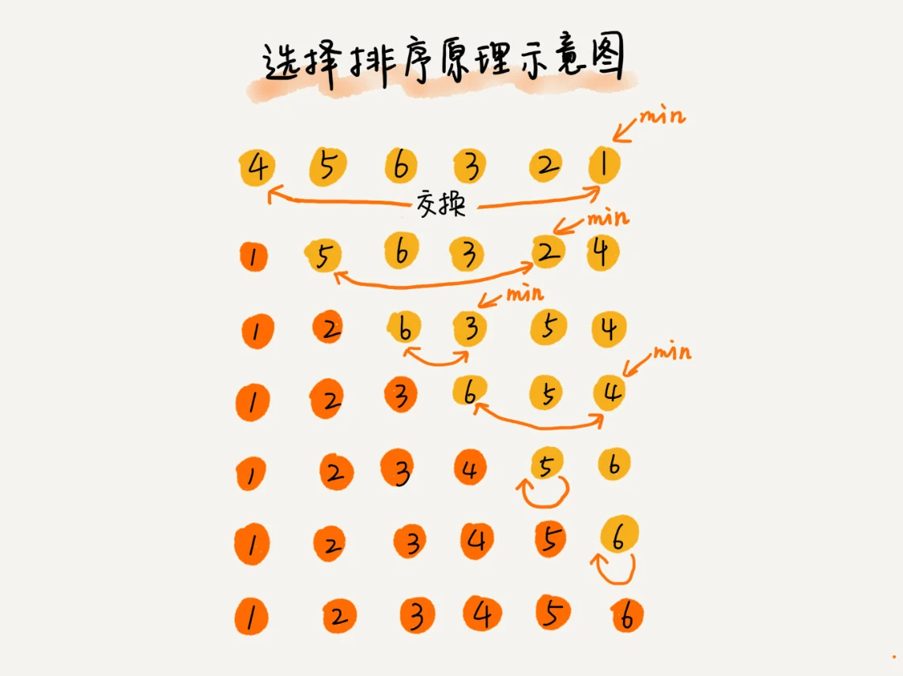

今天来学习排序(上)。排序非常重要。
如何分析一个“排序算法”
除了学习它的算法原理、代码实现之外，更重要的是要学会如何评价、分析一个排序算法。
要从以下几个方面来分析一个排序算法。
排序算法的执行效率
最好情况、最坏情况、平均情况时间复杂度
除了能说出最好情况、最坏情况、平均情况下的时间复杂度外，还要能说出最好、最坏时间复杂度对应的要排序的原始数据是什么样的。
有序度不同的数据，对于排序的执行时间肯定是有影响的，我们要知道排序算法在不同数据下的性能表现。
时间复杂度的系数、常数、低阶
时间复杂度反映的是数据规模n很大的时候的一个增长趋势，所以它表示的时候会忽略系数、常数、低阶。但在实际开发中，我们排序的可能是10个、100个、1000个这个规模很小的数据。所以，在对同一阶时间复杂度的排序算法性能对比的时候，我们就要把系数、常数、低阶也考虑进来。
比较次数和交换(或移动)次数
基于比较的排序算法的执行过程，会涉及两种操作，一种是元素比较大小，另一种是元素交换和移动。所以，在分析排序算法的执行效率的时候，应该把比较次数和交换(或移动)次数也考虑进去。
排序算法的内存消耗
算法的内存消耗可以通过空间复杂度来衡量。
原地排序，就是特指空间复杂度为O(1)的排序算法。
排序算法的稳定性
仅仅用执行效率和内存消耗来衡量排序算法的好坏是不够的。针对排序算法，还有一个重要的度量指标，稳定性。这个概念是说，如果待排序的序列中存在值相等的元素，经过排序之后，相等元素之间原有的先后顺序不变。
如果相等元素之间原有的先后顺序不变，称之为稳定的排序算法，反之称为不稳定的排序算法。
为什么考察排序算法的稳定性呢？在真正的软件开发中，要排序的往往不是单纯的数字，而是一组对象，我们需要按照对象的某个key来排序。
举例说明
现在要给电商交易系统中的“订单”排序。订单有两个属性，一个是下单时间，另一个是订单金额。如果现在有10w条订单数据，希望按照金额从小到大对订单数据排序。对于订单金额相同的订单，希望按照下单时间从早到晚有序。对于这样一个排序需求，怎么做？
- 方法一，先按照金额对订单数据进行排序，然后，在遍历排序之后的订单数据，对于每个金额相同的小区间再按照下单时间排序。(理解起来简单，实现起来复杂)
- 方法二，先按照下单时间给订单排序。排序完成之后，再用稳定排序算法，按照订单金额重新排序。两边排序之后，得到的订单数据就是按照金额从小到大排序，金额相同的订单按照下单时间从早到晚排序的。因为，稳定排序算法可以保持金额相同的两个对象，在排序之后的前后顺序不变。
算法稳定性的用处，多次排序中，下一次排序需要依赖上一次排序的稳定结果。(妙啊)
冒泡排序
思路
冒泡排序只会操作相邻的两个数据。每次冒泡操作都会对相邻的两个元素进行比较，看是否满足大小关系要求。如果不满足就让它俩互换。一次冒泡会让至少一个元素移动到它应该在的位置，重复n次，就完成n个数据的排序工作。
代码
1 | def bubble_sort(a: list): |
特点
- 原地排序，空间复杂度为
O(1) - 稳定的排序算法
- 最好情况、最坏情况时间复杂度分别为
O(n)、O(n^2)
平均时间复杂度分析
利用“有序度”和“满序度”来分析平均时间复杂度。
有序度是数组中具有有序关系的元素对的个数。数学表达式：有序元素对：a[i] <= a[j], 如果i < j。其中完全有序的数组的有序度叫做满有序度。
逆序度是数组中具有逆序关系的元素对的个数。数学表达式：逆序元素对：a[i] > a[j], 如果i < j。
逆序度 = 满有序度 - 有序度
举例：数组的初始状态是4 5 6 3 2 1，其中有序元素对有3个，分别是(4, 5)，(4, 6)，(5, 6)；逆序元素对有(4, 3)，(4, 2)，(4, 1)，(5, 3)，(5, 2)，(5, 1)，(6, 3)，(6, 2)，(6, 1)，(3, 2)，(3, 1)，(2, 1)共12个。
n个元素的满有序度个数等于n-1个元素等差数列为1的求和公式，即(n-1+1)*(n-1)/2=15。
评论区有提到C(n, m)，自己也有印象，然后百度了一下，时间一长，都还给高中数学老师了。。。
组合数公式是指从n个不同元素中，任取m(m<=n)个元素并为一组，叫做从n个不同元素中取出m个元素的一个组合；从n个不同元素中取出m(m<=n)个元素的所有组合的个数，叫做n个不同元素中取出m个元素的组合数。用符号C(n, m)表示。
冒泡排序包含两个操作原子，比较和交换，其中交换次数等于逆有序度。
对于包含n个数据的数组进行冒泡排序，最坏情况下，初始状态的有序度0，所以要进行n*(n-1)/2次交换；最好情况下，初始状态的有序度为n*(n-1)/2，不需要进行交换。取一个中间值n*(n-1)/4来表示初始有序度既不是很高也不是很低的平均情况。
平均情况下，需要n*(n-1)/4次交换操作，比较操作比交换操作多，而复杂度的上限是O(n^2)，所以平均情况下的时间复杂度就是O(n^2)
插入排序
思路
插入算法的核心思想是取未排序区间中的元素，在已排序区间中找到合适的插入位置将其插入，并保证已排序区间数据一直有序。重复这个过程，直到未排序区间中的元素为空，算法结束。上图，(菜鸟教程-插入排序)

代码
1 | def insertion_sort(a: list): |
这个很难理解啊。调试了很久。。
特点
- 原地排序，空间复杂度为
O(1) - 稳定的排序算法。如果代码
a[j] > value修改为a[j] >= value，则为不稳定的排序算法。 - 最好情况下时间复杂度为
O(n)，此时不需要走while循环，只需要遍历n次；最坏情况下时间复杂度为O(n^2)，每次都需要走while循环，移动数据；平均情况时间复杂度为O(n^2)，数组那节提到数组插入的平均时间复杂度为O(n)，对于插入排序来说，每次插入操作都相当于在数组中插入一个数据，循环执行n次操作。
选择排序
思路
选择排序和插入排序类似，也分为已排序区间和未排序区间。但是选择排序每次会从未排序区间中找到最小的元素，将其放到已排序区间的末尾。一开始没理解，上图就一目了然了。

代码
1 | def select_sort(a: list): |
特点
- 原地排序，空间复杂度为
O(1) - 最好情况、最坏情况、平均情况时间复杂度均为
O(n^2)。因为每次都需要从未排序区间找到最小值，而最小值只能通过全部比较一次得到。比较次数为：(n-1)+...+1=n*(n-1)/2次 - 不稳定的排序算法。选择排序每次都要找到剩余未排序元素中的最小值，并和前面的元素交换位置，这样破坏了稳定性。
希尔排序
思路
先将整个待排序的记录序列分割成若干子序列分别进行直接插入排序，待整个序列中的记录“基本有序”时，再对全体记录进行依次直接插入排序。
代码
1 | def shell_sort(a: list): |
代码看的有点晕，看动图也比较晕，比较排序算法-动图演示，先放到这吧，慢慢理解...
特点
- 原地排序，空间复杂度为
O(1) - 不稳定的排序算法。
- 时间复杂度
O(n^(1.3-2))
解答开篇
为什么冒泡排序和插入排序的时间复杂度都是O(n^2)，都是原地排序算法，为什么插入排序要比冒泡排序更受欢迎呢？
冒泡排序和插入排序数据移动次数都是一样的，都等于数据的逆序度。但是在交换数据上，冒泡排序比插入排序更复杂一些，冒泡排序需要3个赋值操作，插入排序只需要1个。Java代码如下：
1 | // 冒泡排序中数据的交换操作 |
把执行一个赋值语句的时间粗略地计为单位时间，然后分别用冒泡排序和插入排序对同一个逆序度是K的数组进行排序，用冒泡排序，需要K次交换操作，每次需要3个赋值语句，所以交换操作总耗时就是3*K单位时间。而插入排序中数据移动操作只需要K个单位时间。以上是分析Java代码的分析。
性能测试
接下来和文章中类似的，用Python写一个性能对比测试程序，随机生成1000个数组，每个数组包含200个数据，然后分别用冒泡排序和插入排序来排序，来看看耗时。
1 | bb = [] |
咦，怎么插入排序比冒泡排序耗时还要长？反过来试试
1 | bb = [] |
咦，怎么回事，仔细一想，哦，原来执行一次排序后，列表bb中的每个元素都已经有序了。好吧，再来。
1 | bb = [] |
咦，和上次的执行结果基本一致，这是怎么回事？原来执行过一次排序后，列表bb和列表dd中的每个元素都是有序的。这主要是因为列表是可变对象，经过第一次排序后，列表bb中的元素是有序的，而列表dd中的元素和列表bb中存储的是同一批数据，指向同一块内存地址。那用深拷贝试试。
1 | bb = [] |
看起来有点对了，但是和文章中说的3倍关系好像还是有点差异，那么来看看Python中交换两个数a[j], a[j+1] = a[j+1], a[j]的原理吧。参考链接：Python交换两个数。回答中提到，
1 | a, b = b, a |
从这段代码中来看，是只有两次赋值操作的。和上面性能测试中耗时时间2倍关系是相吻合的。
另外，可以对比一下最好情况下，冒泡排序和插入排序的耗时情况。尽管时间复杂度都是O(n)，但冒泡排序优于插入排序。
课后思考
上面写的几种排序算法，都是基于数组实现的。如果数据存储在链表中，这三种排序算法还能工作吗？如果能，那么相应的时间、空间复杂度是多少？
来吧，先把置顶评论放到这吧。前提，是否允许修改链表的节点value值，还是只能改变节点的位置。一般而言，考虑只能改变节点位置，冒泡排序相比于数组实现，比较次数一致，但交换时操作更复杂；插入排序，比较次数一致，不需要再有后移操作，找到位置后可以直接插入，但排序完毕后可能需要倒置链表；选择排序比较次数一致，交换操作同样比较麻烦。综上，时间复杂度和空间复杂度并无明显变化，若追求极致性能，冒泡排序的时间复杂度系数会变大，插入排序系数会减小，选择排序无明显变化。
个人思考，如果允许修改链表的节点value值，就会和数组有点类似。数组的优势是根据下标随机访问，劣势是搬移数据；链表的优势是插入删除数据，劣势是随机访问。修改链表的节点value值也是赋值操作，跟数组操作一致。如果改变节点位置，比较次数同循环次数一致，交换(或移动)次数同数据逆序度。但是链表交换位置，意味着需要修改指针指向，如果是单链表需要节点的上一个节点的引用，这样就增加了时间复杂度。